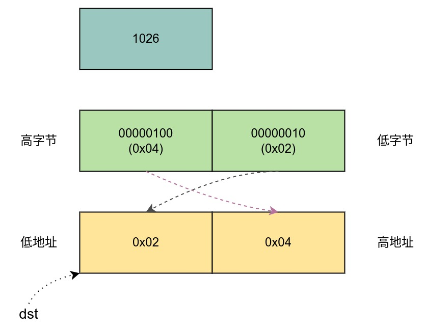
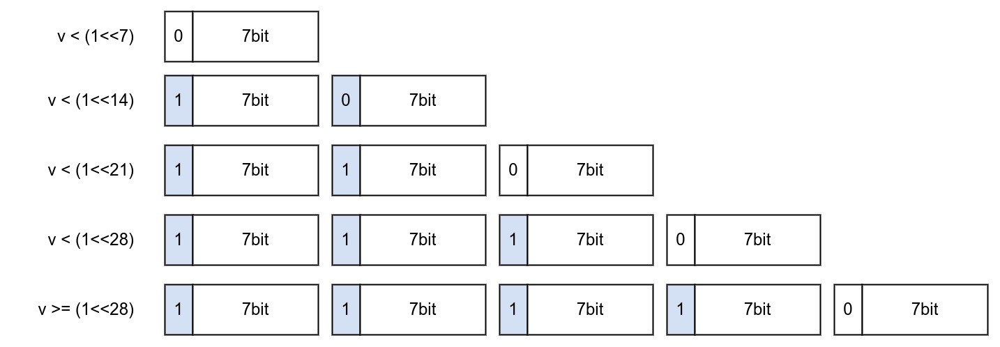
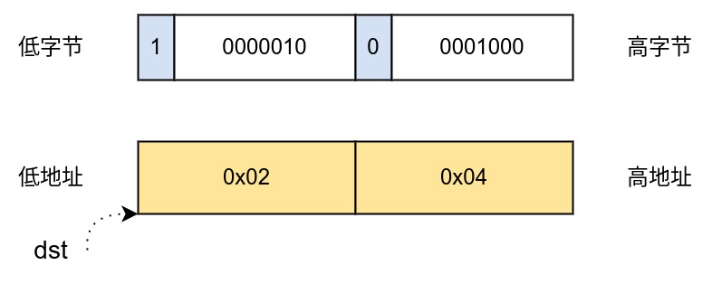
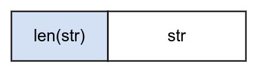

Ch08-LevelDB 之 编码
May 30, 2022
Endian-neutral encoding:
* Fixed-length numbers are encoded with least-significant byte first
* In addition we support variable length "varint" encoding
* Strings are encoded prefixed by their length in varint format
-- util/coding.h
1. 定长整数 #
1.1 定义 #
// 接口
void PutFixed32(std::string* dst, uint32_t value);
void PutFixed64(std::string* dst, uint64_t value);
// 编码
inline void EncodeFixed32(char* dst, uint32_t value);
inline uint32_t DecodeFixed32(const char* ptr);
inline void EncodeFixed64(char* dst, uint64_t value);
inline uint64_t DecodeFixed64(const char* ptr)
1.2 说明 #
将整数的 0-7 位放到第一个地址，将 8-15 放到第二个地址，其他的依次类推。整个字节序按照小端序排列。

举个例子，uint64 类型的数字 1026 转成 二进制是 10000000010，其中高字节是 100，低字节是 00000010，然后将 00000010 存到 dst 指向的第一个地址，100 指向 dst 指向的第二个地址。剩下的 6 字节依次类推（若没有数字则补零）。
2. 变长整数 #
2.1 定义 #
// 接口
void PutVarint32(std::string* dst, uint32_t value);
bool GetVarint32(Slice* input, uint32_t* value);
void PutVarint64(std::string* dst, uint64_t value);
bool GetVarint64(Slice* input, uint64_t* value);
// 编码
char* EncodeVarint32(char* dst, uint32_t v);
char* EncodeVarint64(char* dst, uint64_t v);
2.2 说明 #
跟定长整数编码方式类似，将每个数字按照字节拆分，然后存储到一段连续的地址中。不同的地方是每个地址留出最高位作为标记位，如果标记为 1 或者 0，剩余的比特位用于存数字。 暂时无法在飞书文档外展示此内容

比如 uint64 类型的数字 1026 转成二进制是 10000000010，低字节的 7 位存储到低地址中，低字节的第 8 位置 1，高字节的 7 位存储到高地址中，高字节的第 8 位置 1。

3. 字符串 #
3.1 定义 #
// 接口
void PutLengthPrefixedSlice(std::string* dst, const Slice& value);
bool GetLengthPrefixedSlice(Slice* input, Slice* result);
// 编码
3.2 说明 #
将字符串长度先保留下来，然后将字符串追加在该长度后面。这里的字符串长度采用上面的变长整数（PutVarint32）编码方式编码。
